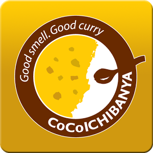
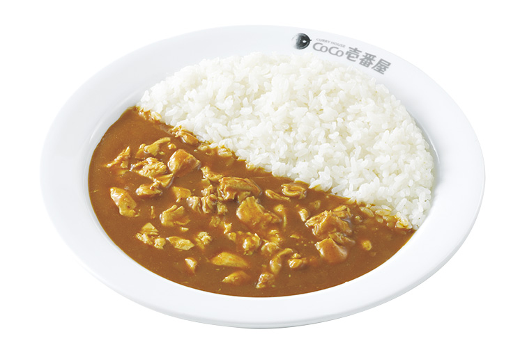
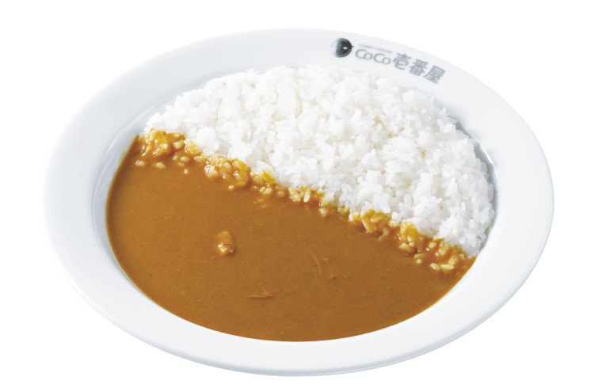
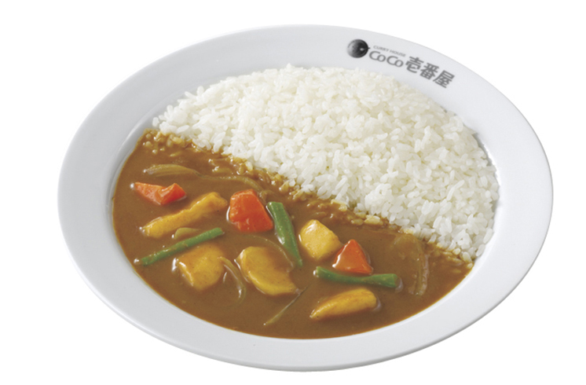

Webサイト開発と運用の実践 中間課題
カレーの健康効果
カレーは二日酔い予防に良い？
カレーのスパイスの中にはウコンがある。ウコンには、クルクミンという黄色いポリフェノールが含まれており、 二日酔いの原因であるアセトアルデヒドの代謝を高める力がある為、飲み会の前にカレーを食べておくと二日酔い予防が期待できる。
朝カレーでスッキリ？
カレーのスパイスの中には血行が良くなるものや辛さで自律神経に作用することで、目が覚めやすいということがある。朝、顔色が悪い場合でもカレーで血流が良くなれば、改善されることもある。
カレーには、さまざまな栄養効果がある。日々の生活の中で、カレーを健康面から取り入れてみるのも良いだろう。
参考：@DIME https://dime.jp/genre/279815/2/
「カレーハウスCoCo壱番屋」人気メニュー 
おなじみの国民的カレーチェーン店「カレーハウスCoCo壱番屋」通称ココイチ
ココイチのカレーで皆から愛されている人気のカレーは何だろうか。
1位：チキンにこみカレー
2位：ポークカレー
3位：野菜カレー
参考：まとめエクシード http://www.mexce.net/monitoring/5149.html
ココイチ公式サイト http://www.ichibanya.co.jp/menu/index.html
著者おすすめのカレー専門店
カレーは飲み物
メニューは黒い肉カレーと赤い鶏カレー
の2種類のみ。
ライスは料金はすべて同じで500g,300g,200gと選べる。
そして更に好きなトッピングを3つ選ぶこともできる。もちろん追加料金はなしだ。
トッピングの種類は
味玉,らっきょう,福神漬け,ポテトサラダ,スライスアーモンド,
パクチー,ツナマヨ,コーンマヨ,バジル,フライドオニオン と豊富にある

私は味玉,コーンマヨ,フライドオニオンを選んだ。
フライドオニオンが特に美味しく、カレーとの相性が抜群であった。
井上大輝
SNS

過去記事
カレーはご飯派？ナン派？
人気のレトルトカレーは？
「バーモントカレー」の新商品!?
広告
LITTLE MERMAID
「とろ～り半熟卵のカレーパン」
© 2017 Daiki INoue